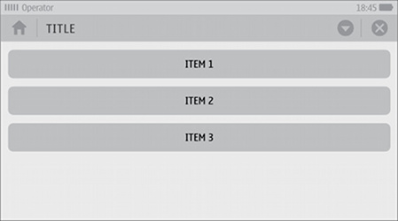
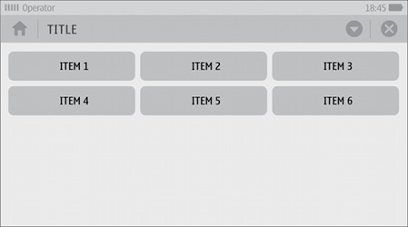
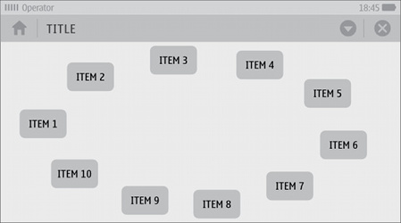
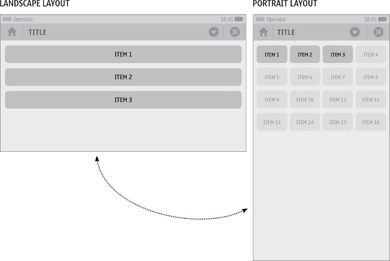
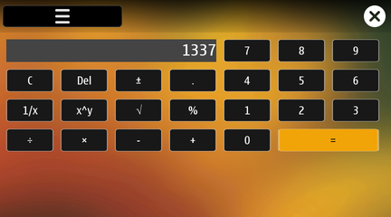
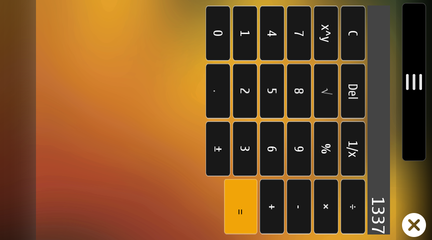
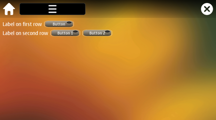

Introduction
MeeGo Touch includes a set of layout management classes that are used to describe how widgets are laid out in an application's user interface. These layouts automatically position and resize widgets when the amount of available space changes, which ensures that they are consistently arranged and that the user interface as a whole remains usable.
There are two different sets of layout classes.
The first is provided by Qt, and inherited from QGraphicsLayout, including QGraphicsLinearLayout, QGraphicsGridLayout, and so on. These Qt classes provide an easy way to place items as you want.
The second set of layout classes is provided by MeeGo Touch, and they offer additional features, at the cost of slightly more overhead. The MeeGo Touch classes work in a slightly different way - there is a single MLayout to which you can add one or more policies that inherit MAbstractLayoutPolicy. This allows a single layout to have multiple policies, with one active at a given time. A different policy can be made active at any time, causing the items within the layout to move into their new position.
The multiple policies in a single MLayout do not even need to contain the same items. New items are shown and hidden as necessary (Unless the item is itself a layout, since a layout cannot be directly hidden itself. However, if a layout is inside a widget which is inside a layout, it is hidden. See Hiding a QGraphicsLayout or MLayout).
Tips for using layouts
- When you use a layout or layout policy, you do not need to pass a parent when constructing the child widgets. The layout automatically reparents the widgets so that they are children of the widget on which the layout is installed. When the parent widget is deleted, its layout and all of its children are also deleted.
- Widgets in a layout are children of the widget on which the layout is installed, not of the layout itself. Widgets can only have other widgets as parent, not layouts. You can nest layouts using addLayout() on a layout; the inner layout then becomes a child of the layout it is inserted into.
- You can have one policy in landscape mode and another policy in portrait mode. You do not even need to have the same items in both modes.
- If you only want to switch between a horizontal and vertical linear layout policy, you can use MLinearLayoutPolicy::setOrientation() instead of multiple policies.
- For a complex set of nested layouts, it is easier and more lightweight to use nested QGraphicsLayouts than to try to nest MLayouts .
- For more information, tips, and examples, see the QLayout and QGraphicsLayout documentation.
Right-to-left layouts
In right-to-left languages, such as Arabic, the layouts are automatically reversed. This is usually the correct behaviour. However, you can override this by directly calling QGraphicsWidget::setLayoutDirection(). For example, the calculator example has the following code snippet:
CalculatorWidget::CalculatorWidget()
{
mValue = 0;
//Prevent the layout from changing in right-to-left.
//The calculation line will still be reversed however.
setLayoutDirection(Qt::LeftToRight);
/* Create a MLayout attached to this widget */
MLayout *layout = new MLayout(this);
Widget sizes
To determine the size of a widget in a layout, the layout uses the widget's QGraphicsLayoutItem::preferredSize() and its QGraphicsLayoutItem::sizePolicy() functions. The preferred size of a MWidgetController is determined as follows:
- The constraint passed to the MWidgetController::sizeHint() function - usually due to the layout.
- Developer set hints (using QGraphicsLayoutItem::setPreferredSize(), and so on).
- Style set size (for example, from the CSS files).
- View's MWidgetView::sizeHint() function.
- MWidgetController::layout()->QGraphicsLayoutItem::sizeHint() function.
The sizes given from the first 3 steps are combined, in the above order of preference. If the height and/or width are not specified, the MWidgetView::sizeHint() function is called, with constraint parameter set to the size determined so far. The result from the view is then combined with the constraint.
Finally, if this size is still not valid, the size is combined with QGraphicsWidget::sizeHint() which in turn uses the layout's QGraphicsLayoutItem::sizeHint() function.
If you create your widget and its width depends on its height, its size policy must have set QSizePolicy::hasHeightForWidth().
- See also:
- MWidgetView::sizeHint()
Main policies
- MLinearLayoutPolicy - For placing items horizontally or vertically:

- MGridLayoutPolicy - For placing items in a grid:

- MFlowLayoutPolicy - For placing items on a horizontal line, overflowing onto the next line:

- MFreestyleLayoutPolicy - For placing items freely, but preventing items from overlapping:

Multiple policies
Multiple policies can be assigned to a layout. It is particularly useful to have one policy in portrait mode and another policy in landscape mode. For example:

A more concrete example is given with the example calculator application.


- See also:
- MLayout With Multiple Policies Example, Stylish Calculator example, Hiding a QGraphicsLayout or MLayout, MLayout
Advanced layout with QGraphicsLayout
For advanced item layout, you can place multiple layouts together. The easiest way to do this is to use a mix of MLayouts and QGraphicsLayout, and use a MLayout only when animations and multiple policies are required.
For example, if you use multiple QGraphicsLinearLayouts , you create a layout where items are placed in rows, but they do not line up vertically. For example:

Example code
- QGraphicsLinearLayout example
- QGraphicsGridLayout example
- DuiLinearLayoutPolicy example
- DuiGridLayoutPolicy example
- DuiFlowLayoutPolicy example
- DuiFreestyleLayoutPolicy example
- MLayout With Multiple Policies Example
- Hiding a QGraphicsLayout or MLayout
- Stylish Calculator example
- QGraphicsLayout Example